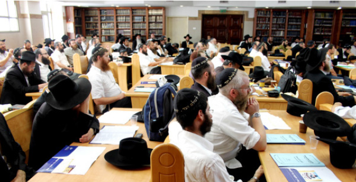

Learning and Living Geula
A Yom Iyun – Yeshiva for a Day took place recently which dealt with the topic of “ The State of the World in Yemos HaMoshiach . ” The gathering took place in Yeshivas Tomchei T’mimim in B’nei Brak and was attended by shluchim , directors of Chabad houses, teachers, and balabatim .
By Yosef Yitzchok Goldberg
|
 |
When I saw the ad in Beis Moshiach about the “Yeshiva for a Day,” I thought it was another Kinus/course/seminar in the style of the Yemei Iyun on important topics that often take place. On my way home that Thursday following the event, after a day packed with learning, I realized I was mistaken. I discovered that the hanhala of Mamash, who decided to launch this project called “Yeshiva for a Day” (this is their fourth year), meant what they said; it was yeshiva.
WILL THERE BE ROAD ACCIDENTS AFTER THE GEULA?
In the beautiful lobby of Yeshivas Tomchei T’mimim in B’nei Brak, you could easily hang up a stop sign which says, “Stop, Learning Going on Here!” because it wasn’t a day of lectures but a yeshiva framework. There were about three hundred young men, Anash, and shluchim as well as balabatim, who had the wonderful opportunity, albeit for one day, to partake in a full day of learning a vast array of Torah topics within the designated framework that I haven’t experienced since I returned from 770. When was the last time we had the opportunity to spend an entire day learning Torah?
The decision to hold a Yom Iyun on Inyanei Moshiach and Geula is important, because it enables Lubavitchers to fulfill the Rebbe’s wish that we delve into this topic, which is the “straight path” to bringing the Geula.
“The State of the World in Yemos HaMoshiach” was the topic chosen this year, and it was examined throughout the day from all possible angles. From ten in the morning until late at night, we were exposed to the wealth and depth of Toras HaGeula and Yemos HaMoshiach as it appears in the writings of Chazal, the prophets, the Midrash, the Talmud, Halacha, and the writings of kabbala, all made clear by the lecturers, all of whom are teachers in the Chabad yeshiva world.
Upon arriving, each person received a booklet of learning material that was carefully prepared. On the side, fresh baked goods and hot and cold drinks were available. I was impressed by the technical side of things down to the last detail. As I looked around at the variegated crowd around me, I was happy to see some friends. One of them said to me that this is his third year in attendance. “It’s a real rest for the soul and a distraction from daily routine.”
R’ Sholom Yehuda Leib Ginsburg, a shliach in Haifa, began the program with the maamer “Hinei Yaskil Avdi 5732,” which is about the role of Moshiach in rectifying the physical world on all levels of creation. Moshiach, by his effect on the world, will fulfill the promise of “and all flesh together will see,” that every single person will be capable of seeing G-dliness not only with spiritual vision but with his physical eyesight, “that the mouth of G-d has spoken.”
He spoke about the changes that will take place in the reality of the world in accordance with the impact of Moshiach, which is explained in Chassidus. This idea of the world transitioning into a new state, from Galus to Geula, was seen more practically according to Nigleh of Torah in the next shiur, which was given by R’ Dovid Menachem Mendel Shaer, teacher and mashpia in Yeshivas Chanoch LeNaar.
R’ Shaer discussed interesting cases in the laws of accidents such as, will there be road accidents after Moshiach comes? What will change in the nature of animals that will cause a wolf to live with a lamb? And, if it’s the true and complete Geula, why will we need Cities of Refuge?
A DAY OF LEARNING THAT GIVES A CHAYUS TO SHLICHUS
The next lecture, “Iyunim B’Hadran al HaRambam 5749,” was given by R’ Shmuel Kleinman, a teacher and mashpia in Tomchei T’mimim in Ohr Yehuda. He also dealt with the state of the world in Yemos HaMoshiach by delving into the Rebbe’s Hadran on the Rambam, “no jealousy, no hatred, and no competition.” The absence of negative tendencies and the brotherhood that will prevail in the world is rooted primarily in the study of P’nimius HaTorah wherein shines G-dliness in its purest form, without questions and arguments. Through P’nimius HaTorah, the true perfection of Yemos HaMoshiach will be revealed in a new world in which there is only goodness and peace without any jealousy and hatred, characteristics of Galus.
In my view, here for the first time one had an opportunity to get a deep and fundamental overview of an essential subject (which is missing from many who are knowledgeable in the Rebbe’s teachings) known as “Hadranim on the Rambam.” In R’ Kleinman’s shiur, we learned about the Rebbe’s approach to learning in these Hadranim that deal with Inyanei Moshiach and Geula. In a deep and precise way, the Rebbe wondrously weaves together all parts of Torah, Nigleh, Chassidus, and Sifrei Chakira.
The first session ended with the fourth lecture, given by R’ Yeshaya Goldberg, mashpia in the Chabad yeshiva in Ramat Aviv. He focused on the topic of how the world will be in Yemos HaMoshiach in light of the Rebbe’s famous sicha (Likkutei Sichos vol. 27) about two eras in Yemos HaMoshiach. First, at the beginning of Yemos HaMoshiach, none of the usual workings of the world will change. Next, at a later point in the Yemos HaMoshiach, wondrous things will take place, including that which is not the usual way the world operates.
He spoke of the gradual physical changes that will take place during the first era and the revelation of G-dliness within the physical reality of the world at the end of the second era.
At the end of the session there was a short break and lunch was served. It was inspiring to see two men at the table who had decided to take off from work so as not to miss this Yom Iyun. I heard R’ Mutti Anati, shliach in Florida, say, “The program is packed and the level of learning is high. After a few hours of learning here, I will go back to my shlichus completely different.”
ALL OF TORAS HA’GEULA IN THREE STAGES
The centerpiece of the Yom Iyun was the “shiur klali” given by R’ Meir Wilschansky, teacher and mashpia in the Chabad Yeshiva G’dola in Tzfas, on the topic “Miracle and Nature in Geula.” In a deep, intellectual, and adeptly constructed shiur, he summarized the material under study as laid out in the materials included in the booklet.
He began his shiur with a number of questions on the principles that had been learned during the day. As the basis for reconciling it all, he first went through the three stages in the revelation of G-dliness that the Rebbe teaches: 1) Elyon – drawing down from above, 2) Tachton – raising up from below, 3) Transcending Elyon and Tachton and combining them, i.e. drawing down and raising up simultaneously.
For nearly two hours, he defined this approach and gave about ten examples from the Rebbe’s sichos and maamarim that clarify this division into three. Based on this, he proved how we can look at Yemos HaMoshiach as it is explained in the Rebbe’s teachings as 1) miraculous, 2) natural, and 3) a combination of the two.
The first approach, the miraculous, denotes a revelation from above-downwards, based on the approach of kabbala and the determination of Chassidus. The second approach, the natural, that the world will continue to operate as usual, is according to the Rambam and the philosophical chokrim. The third and decisive approach is a combination of miracle and nature, the Rebbe’s chiddush, which divides Yemos HaMoshiach into two eras.
THE GEULA – FROM THE TEACHINGS OF R’ LEVI YITZCHOK
The third session began, led by the emcee R’ Yechiel Kupchik. Three lectures were given with each speaker presenting an in-depth look at three approaches based on different perspectives: the prophets, kabbala (Likkutei Levi Yitzchok), and the disciples of the Baal Shem Tov.
R’ Yosef Yitzchok Offen, mashpia in Chabad yeshivos in Eretz Yisroel, gave a shiur in which he explained the secrets of kabbala from Likkutei Levi Yitzchok. For close to an hour, he covered explanations of and allusions to Inyanei Moshiach and Geula in the teachings of R’ Levi Yitzchok.
THE CLASH BETWEEN CHASSIDIM AND MASKILIM – GOG AND MAGOG
Learning Inyanei Moshiach and Geula is widespread; learning it from the perspective of all the students of the Baal Shem Tov is a novelty. The Admur R’ Shraga Feivish Zalmanov spoke about “The Geula in the Teachings of the Students of the Baal Shem Tov throughout the Generations.” He began by asking sarcastically, “Since when does Chabad take an interest in Poilishe Toira? We must say that we are already in Yemos HaMoshiach!”
The Admur has written ten s’farim on the Chassidic teachings of his ancestors and he showed proficiency in the explanations brought in the teachings of our Rebbeim and their source in the writings of the talmidim of the Baal Shem Tov. For example, a recurring line in the Rebbe’s sichos is “all your days to bring to Yemos HaMoshiach” – that the avoda of the Jewish people throughout the generations is to bring about the Yemos HaMoshiach. This explanation is from the Tiferes Shlomo of Radomsk, one of the talmidim of the Yid HaKadosh of Peshischa.
Also the explanation brought often in the sichos on the verse “a star went forth from Yaakov” – that it refers to Moshiach and every single Jew because a spark of the soul of Moshiach shines within the source of his neshama – is found in the Meor Einayim of the R’ Menachem Nachum of Chernobyl, a talmid of the Maggid of Mezritch.
In his fascinating speech we were exposed to a world that we were unfamiliar with. We discovered how all streams of Chassidus flow to the same sea, the sea of the true and complete Geula:
“The truth of the matter is, it is a mistake to search for Geula and Moshiach only within the teachings of the Baal Shem Tov because everything is Geula and Moshiach,” he declared, and he began explaining how the teachings of Chassidus and the teachings of Geula are one and the same, both the general Geula for the world and the personal Geula in man’s avoda.
He quoted writings of Chassidus that identify the revelation of the teachings of the Baal Shem Tov as the start of a new era leading to Yemos HaMoshiach and the opposition of the Misnagdim to the Chassidim and the clash with the Maskilim as a sort of War of Gog and Magog.
17 PROPHETS OF GEULA
The final lecture was given by R’ Shimon Weitzhandler, the editor in chief of the publishing arm of Mamash and rosh yeshiva of Tomchei T’mimim in Rishon L’Tziyon. He presented a fascinating summary of the prophecies in the N’viim, based on a series of lectures that he gave at the previous Beit Seifer L’Torat Ha’Geula. In one hour he took us on a circuit of all the books of Tanach.
He began with the unique work written by R’ Yitzchok Abarbanel, Mashmia Yeshua, in which he sums up all seventeen prophets of the Geula. Each navi had a mission based on his circumstances, location, era, and the people of his generation. Based on the Navi’s style, Hashem revealed prophecies of the Geula to him according to the state of the people at the time:
Yeshaya the Navi lived during the reign of the Kings of Yehuda, a good era before the bitter exile. In his prophecies of Geula, Hashem showed him directly what it would be like in the Geula and what positive events would take place in Acharis HaYamim.
Yirmiyahu the Navi was taken down to Egypt in his old age and was the prophet of rebuke at the beginning of the galus and the churban. In his prophecies of consolation and rebuke, Hashem revealed to him the prophecies of Geula and Acharis HaYamim in the form of contrast to the negative.
Yechezkel is the Navi of exile. Hashem’s prophecies to him were about what Geula is, as opposed to exile.
The shiur concluded with the Writings, the Book of Daniel which addresses foundational ideas of Geula such as the vision of the four kingdoms and the secret of the end of galus. He says that Daniel is not a typical book of prophecies. It expresses what Daniel himself was about as a scion of royalty. He led his life in a manner of Geula, and he rose above all the difficulties of galus. He became second to the king and merited to see the building of the second Beis HaMikdash, which is why he has the most essential prophecies of Geula.
The richly packed day of learning ended with words from R’ Elimelech Thaler, director of Mamash, who spoke from the heart:
After being exposed to such depth and a wealth of information about the Geula, each of us has the responsibility to carry out the Rebbe’s horaa and bring everything we learned to the wider public. We cannot keep this to ourselves.
He let the audience know about the activities of Mamash and asked them to buy material and give it out.
The crowd was very inspired and the “Yeshiva for a Day” ended with a rousing “Yechi Adoneinu …” After davening Maariv, they sat down to farbreng. It wasn’t a farbrengen after a long day’s work this time, but a farbrengen after an entire day of preparation. It began on a high note in an uplifting atmosphere. The participants brought down all that they learned to practical terms. It was a time that many people made good hachlatos.
It was an extraordinary experience; one more program to give the Rebbe nachas!
Beis Moshiach (staff). "Learning and Living Geula." Beis Moshiach, no. 893 (August 19, 2013).